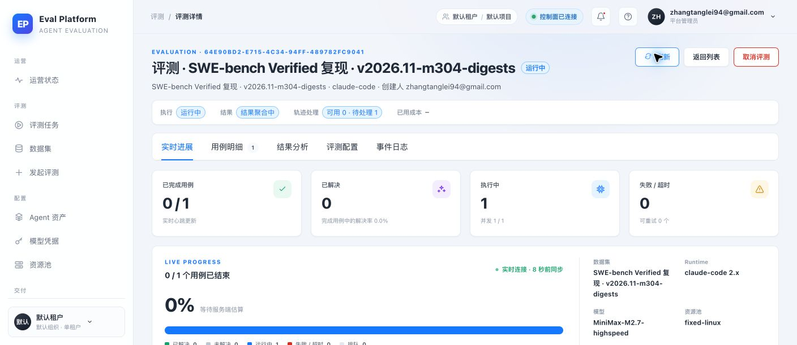
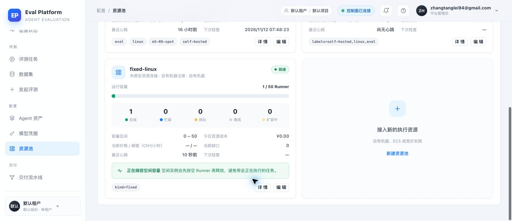
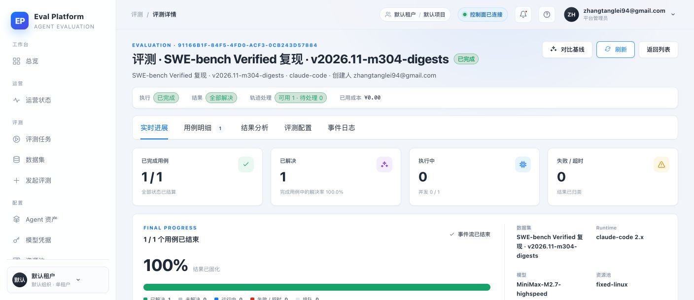

- 功能 PR
- #137 · merged 38d4bb39476e6693085a92a96bbce7cc452a862c
- 原问题评测
- 707bb3bc · queue_timeout，保持历史记录
- 新验证评测
- 64e90bd2-e715-4c34-94ff-489782fc9041
- 首次 pickup run
- 43121931498 · fixed Runner picked up；暴露 EACCES
- 部署后复测 run
- 43125799590 · 权限通过；暴露 sequence 冲突
- Runner
- fixed-linux-eval · self-hosted / Linux / X64 / eval
- 历史池标记
- kind=fixed 仅展示为 provider 元数据，不再成为 runs_on
M7-136 · FIXED POOL LABELS
固定资源池标签修复 Smoke 报告
历史 fixed provider 标记已从 Runner 标签解析中剥离；固定池评测已由生产 fixed-linux-eval 接收并通过 reconciler 完成。真实执行连续发现容器权限与终端 sequence 冲突，两项均已修复并等待最终部署复测。
3验收场景
1在线 Runner
1/1新评测执行中
2已修复集成缺陷
Environment and Artifact
2026-11-12 · macOS Chrome + 生产 ECS + GitHub ActionsScenario Matrix
3 pass · 2 fixed| # | 场景 | 结果 | 说明 | 证据 |
|---|---|---|---|---|
| 01 | 历史 fixed 标记解析 | PASS | {"kind":"fixed"} 不再被当作标签，默认返回 self-hosted、linux、eval。 | test_runner_labels.py backend pytest |
| 02 | dispatch/manifest 一致性 | PASS | 固定池分片的 client_payload 与 manifest 都冻结真实 Runner 标签，显式 runs_on 仍优先。 | test_evaluations.py 固定池创建回归测试 |
| 03 | 生产 fixed Runner 接单 | PASS | 新评测 prepare 成功，execute 从 queued 进入 in_progress，页面并发由 0/1 变为 1/1。 | 01-fixed-pool-running.png 02-fixed-pool-online.png run 43121931498 |
| 04 | 容器产物权限 | FIXED · PENDING DEPLOY | 宿主读取 Claude 原生文件时出现 EACCES；删除容器前由 root 对 /testbed 执行 a+rwX，并用收紧目录权限的 fake Docker 回归复现。 | tests/runner/real-task-trace-retention.test.mjs runner/scripts/real-task.mjs |
| 05 | 终端 sequence 与 heartbeat 冲突 | FIXED · PENDING DEPLOY | completion/failure 固定使用 sequence 2/3，长任务中会被 heartbeat 先占用；现改保留 terminal/failure 高位 sequence，先红后绿覆盖。 | tests/runner/heartbeat-integration.test.mjs 03-reconciled-complete.png |
Issues and Observations
P1 Claude 原生文件权限导致宿主评分与清理失败P1 completion/failure sequence 与 heartbeat 冲突
Claude 原生文件权限导致宿主评分与清理失败
- Actual
- 读取 .runtime-home/.claude 与创建 trace/diagnostics 时出现 EACCES。
- Expected
- 容器退出后宿主可读取原生文件并执行评分、抓取与清理。
- Root cause
- Claude 生成的会话路径带有限制权限，宿主进程无法遍历。
- Fix
- 容器仍存在时由 root 对 /testbed 执行 chmod -R a+rwX。
Fixed · awaiting deploy verification
completion/failure sequence 与 heartbeat 冲突
- Actual
- 长任务 heartbeat 已占用 sequence 2/3，completion 与 failed 回调返回 500。
- Expected
- 终端回调 sequence 始终晚于该 attempt 的所有 heartbeat。
- Root cause
- real-task 把 completion/failure 固定写成 2/3，而 sidecar 从 2 持续递增。
- Fix
- 终端保留高位 sequence 1000000/1000001，并补心跳后再完成/失败回归。
Fixed · awaiting deploy verification
Evidence
3 screenshots


Automated Coverage Assessment
3 areas reviewed| 范围 | 自动化 | 结论 | 后续建议 |
|---|---|---|---|
Conclusion
标签与两条集成缺陷已修复，待最终复测历史占位标记不会再生成错误的 kind 标签；生产固定 Runner 已接单，集成测试发现的产物权限与 terminal sequence 冲突均已修复并有回归。
- 707bb3bc 保留为历史超时记录，不自动恢复。
- 新评测 64e90bd2 已由 fixed-linux-eval 接单。
- 权限修复已部署并越过 EACCES；terminal sequence 修复需下一轮部署后复测。
- Reconciler 已验证评测最终完成、结果 resolved、轨迹 ready，但 Runner job 仍需无错误完成。
AI Eval Platform · M7-136 fixed-pool label smoke · evidence generated from Computer Use and GitHub Actions